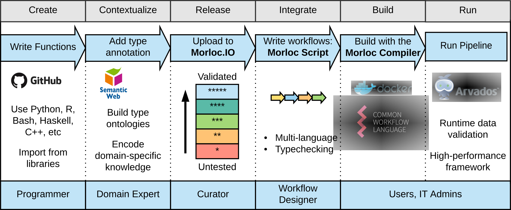

Morloc is a framework that allows interoperability between functions across languages, multi-language libraries and package managers, and encoding of domain specific behavior into the type system. Based on this framework, we will build a community portal for curating a universal library. Any public functions in this library can be used in any Morloc script. They may also be imported into specific languages and used.
We accomplish this by providing
-
a framework for passing rich data between languages
-
a common library across languages
-
a common meta-programming language
Introduction
1. Motivation
The computer programming world is divided into insular communities centered around specific programming languages. A function written in one language cannot generally be used in another, this leads to costly reimplementation of whole libraries. Further, there is also no general, inter-language method for finding a function that performs a specific role. These problems slow the development of analytic pipelines and hinder collaboration between communities.
The reason we are developing Morloc is to address these primary pain points:
-
programming is tedious
-
functions cannot be used across languages
-
functions are not searchable
-
cross-language abstractions are poor
1.1. Programming is tedious
While documentation, testing, checking, and package and system design are seen as the tenants of "good programming", these are all "evils". They are evil because they contribute nothing intrinsically to the purpose of programming, which is either to ask a question and get an answer or to animate a process. They are thought good only for the reasons death is thought good.
Any work that is not part of the end. I distinguish here between the "means" and the "ends". The "means" are tedious. The Morloc composer should not have to deal with them. Rather, they describe the ends. They describe the input data. They describe the serious of transformations that may be done upon it. Then the compiler builds the program. And the composer interacts with it however they like.
From the programmer’s point of view, "tedious work" is anything that is not part of the transformation from inputs to outputs. Checking the inputs, testing and benchmarking, internal infrastructure, package infrastructure, most documentation, writing input and output, handling caching, handling runtime environment, handling parallelism.
1.2. Functions cannot be used across languages
A second problem is the complexity of using functions across languages. This problem is especially vexing for high-turnover analyses, where there is a constant flow of wildly different problems, requiring tools from dozens of fields, and reading data in all manner of forms and formats. One solution is to program pipelines where each function is wrapped as an executable and then called from a master language. This is the approach taken by Galaxy and the whole Make-family of rule-based languages. However, this suffers from bloated code.
Inter-language interfacing can require some of the most tedious coding imaginable. Let’s say we have two functions, f and g, from two different languages. To connect them we have to 1) write a wrapper around f that converts the output of f to a language-agnostic file that g understands (e.g. csv, JSON, XML), 2) write a wrapper around g that tries to open this file (with read error handling), 3) convert the raw binary data into the internal form g needs, 4) write code to assert the input to g is correct, and 5) inform the master program of any failure. The programmers of f and of g have to agree on two conventions: a common intermediate formats and a way to pass error. This approach is so tedious and error prone that sensible people avoid multi-language systems.
This barrier between languages causes languages communities to become highly insular. Every problem has to be reimplemented in every language. For example, we have Bioperl, Biopython, Bioconductor ®, Biojava, etc. Also this places new languages, with few libraries, at a disadvantage, and thus slows the evolution of programming.
1.3. Functions are not searchable
The final problem is that searching for functions is annoyingly difficult. Within in a specific strongly-typed language, you may be able to search by function signature. Within dynamic languages you are limited to text searches against the documentation or unchecked, hand-written type annotations. Searching for functions across languages is an unsolved (and usually unasked) question. The best we can do is query Google and hope the terms are written in the documentation.
While all of this is tedious for humans, it is all but impossible for machines. We have written trillions of lines of code and millions of functions, but only humans can use them. We have built elaborate systems for searching data, powerful algorithms for reasoning on data, specifications and formats for passing data, but for functions we have nothing. Machines cannot reason about or use our tools.
1.4. Cross-language abstractions are poor
2. What is Morloc?
Morloc is a highly minimal, functional programming language with a semantic type system and a very special compiler. The language exclusively relies on functions cannibalized from other languages. The transfer of data between the constituent functions is entirely automated such that the Morloc programmer needn’t know where the function came from. Likewise, the programmer who writes the function needn’t know that their function will be consumed by Morloc; they are free to write in completely idiomatic prose, without boilerplate.
The semantic type system is what makes this possible. Think semantic web. Ontologies. The types, and the relationships between them, are specified in an ontology. Every function is given a signature that describes the inputs and outputs of the function and also lists any constraints. This function signature and the type ontology are the two pieces of information shared between Morloc programmer and function writer. The type ontology and the function signatures are the axioms of a logical system. The code written by the programmer compiles to a list of logical statements. The program is correct if the whole system is logically consistent.
Logic programming is old. Very old. But over the last few decades it has gone out of fashion. With the rise of the semantic web, that is beginning to change. Logic machines are beginning to challenge deep learning as a path to general intelligence (see Doug Lenat).
A semantic type system would allow expression of relations between types. A possible relation might be, "There exists Filename openable as Text". Then if you pass a Filename to a function expecting Text, the compiler can infer that Filename is convertable, with possible failure, to Text. It can then search a database for a suitable function, and if the function is found, insert it between Filename and Text. By importing different sets of relations, the strictness of a program can be finely tuned. Behavior that is hard-coded in most languages, becomes easily customizable. If you want your pipeline to automatically try to resolve type conflicts by converting a String to a Number (as is done dynamically in Perl), you just have to add the relation that Number can be cast as a String (the reasoner can then infer that some String can be cast as Number).
The compiler’s logical inference can go further. In principle, if a path exists between any two types, the compiler can find it (e.g. Internet → LaunchCodes) and build a logically correct program. While the function signatures are highly expressive, they do not specify what actually happens inside the function. Functions in Morloc are black boxes. The function signatures are premises of the system. However, functions are types and they also can be annotated with additional semantic information.
The semantic type system gives all the information the compiler needs to convert data between languages. Concrete, language-specific types would map to instances of the type classes. A given language may have 0 or more instances for a given type (e.g. the C types 'float' and 'double' might both be instances of the Morloc type 'Real'). The compiler would sometimes need a hint from the programmer about which instance to use.
Semantic types offer many additional possibilities. Sets of inter-convertible
types could be specified (e.g. {Meter, Foot, Angstrom} or sequence alignment
formats {ClustalW, Stockholm}). Types could be given attributes, such as
has_length which could be automatically used in descriptive statistics. The
semantic type system could, I think, emulate the typeclasses of Haskell, e.g.
"Monoid" or "Traversable". Types could be associated with metadata, such as
statistical generative models.
Speaking of statistical generative models, most types should have one. If we can simulate data for all inputs to a function, then we can automatically test the function, generate sample data, and build simulation-based performance models. Given performance models, the compiler can reason about the performance of the overall system, allowing estimation of runtime given inputs and smart optimizations.
Overall, I want to give the compiler what it needs so that it can reason about the code and automate away the tedium of programming.
3. Pieces
given an ontology, database of typed functions, and an application, it generates code to allow the functions to talk across languages and builds a nexus to integrate them.
Morloc is intended to allow tools and languages to be interoperable. The user should be able to import a function from any language and expect it to run. For this to work, the compiler needs to have the languages and tools installed. The user should not have to install all this. Instead, they work through Docker. Inside the Docker image, everything they need is present. When a new program is installed, the code is sent to the docker image, everything is built in there and run in there. The local executable is an API to the docker image. Or something. I seriously need to prototype this.
a language for ascribing sufficient semantic information to data and functions that an AI can automate every sort of tedious work.
A knowledge-base describing the relations between all data types and storing all functions.
4. Morloc workflow
The figure below outlines the 6 levels of the morloc
workflow.
|
Note
|
Most of this framework is not yet implemented. For now, morloc can be run
only as a simple fuctional programming language that imports functions from a
few languages and generates an executable. A rough syntax for expressing types
is supported, but full type checking is not.
|

-
The creation level. The programmer creates their functions just as they would without
morloc. New functions and libraries can be written using idiomatic syntax. The code is maintained in the programmer’s favorite version control platform (e.g. github) and maintained following whatever conventions are standard for the given language. That is, the programmer does usually not need to change anything in order to integrate withmorloc. -
The semantic level. Each function in the library is given a type annotation (perhaps automatically). The type annotation may be as simple as
Int → Int, just like a C prototype. Simple type signatures like this may be inferred automatically from the source code if the guest language is typed. Far more expressive types can also be used. -
The curation level. Once types are assigned to the functions, they can be uploaded to the
morlocIOrepository. Here they can be benchmarked against related functions (even across languages), documented, discussed, and organized into rich modules. Entire workflows, compositions of manymorlocfunctions, can be uploaded as well (see next level). Stats for how functions are used can be maintained. They can be plugged into cross-language test suites. Functions and libraries that are reliable will gain "stars". Community knowledge about how these functions are used will be collected to allow deeper automated reasoning. -
The integration level. All the libraries can be queried using powerful semantic query languages, such as SPARQL. Functions can be imported into Morloc scripts and composed into new programs. These new programs can then be uploaded to
morlocIOor built into new programs. Programs can be type checked and the deep knowledge the type signatures provide, along with access to themorlocIOknowledgebase and any local knowledgebases, will allow powerful inference of optimal parameters, function choice, runtime modeling, or inference of the optimal sequence of functions to achieve a given end. -
The build level. Workflows can be compiled into local executables, graphical user interface wrappers, or scalable workflows (e.g. using the Common Workflow Language). The compiler, armed with a powerful reasoner and deep knowledge about the system, can figure out how to integrate the functions across languages and embed them in code for handling error, caching data, and scaling.
-
The execution level. Depending on the build configuration, the resulting program may be run locally, uploaded to a cloud computing framework (e.g. arvados using CWL), shared with users as a GUI (e.g. an automatically generated Shiny app), or imported into MorlocStudio.
Theory
5. Architecture
-
KL, RL, QL
6. Build system
Internally, Morloc follows a model similar to Pandoc. Pandoc can convert between markup formats (for example HTML, Markdown, LaTeX, and Word). All data is stored internally as an abstract syntax tree. To add a new markup format, a programmer only needs to add a Reader and Writer that converts the new markup format to and from Pandoc’s internal format.
From the Morloc users perspective, a module is a set of Morloc functions that can be used in a Morloc program. Each function in the module has a type. But the actual implementation, which is hidden from the Morloc user, is a bit tricky. There are a couple very different cases:
the imported module is:
-
a Morloc script. In this case, we are importing selected compositions written in Morloc. These Morloc imports are nodes on a tree.
-
a single function in language X that uses only core features from X. No external libraries are used. No version info given. It is assumed that the function will work on any version of the language.
-
a collection of functions in X and imports from X libraries. No version info. In this case, the Morloc compiler needs to find and install the required libraries. It is assumed that the functions will work with an version of the language or libraries.
-
#2 or #3, but with version info given. Install the specific version, or the highest version in the range.
-
import a library from X. This is easier than #2-4, see the note below.
6.1. How to make a Morloc module

7. Forms of data and the GRIM model
U <-> I <1-n> T <?-?> S
|1 |1
\1 /1
\ /
vv
C <1-1> L_i <1-1> C_i-
U - User interface data
-
I - Internal Morloc data
-
T - Typed Morloc data
-
S - Standard formats
-
C - Common form
-
Li - Language-specific forms
-
Cu - Language-specific Cache
CDF - Common Data Format
The semantic type system can be partioned into 4 main groups (GRIM model).
7.1. General (G)
A structured type that can often map directly to the machine type of specific languages, though this may be ambiguous when a given type of data can map to multiple language-specific types. G maps uniquely to a CDF. This is the lowest level type that generalizes across languages.
-
Integer
-
ProteinSeq, ProteinStructure
-
Table {col1 : Integer, col2 : String}
7.2. Resources ®
Types that describe resources. This may be data outside of the CDF. It may be databases.
-
URL, Filename, Folder
-
SQLDB
-
FastaFile, FastaFile UniProt, FastaFile GeneBank
-
Markdown, Markdown GitHub
-
Music, MP3
7.3. Ideal (I)
A high-level idea that often does not contain enough information to unambiguously map to a machine type.
-
Protein
-
Shoe, House
-
Tree
-
Symbol
-
Music
7.4. Machine (M)
The data type within a specific language (e.g. AAStringSet or double). The
Machine type will closely follow type format for the specific language. Part of
building the binding for a new language is mapping M←→G.
-
© int, double, float, bool
-
® integer, numeric, logical
-
® AAStringSet
8. Functions may have roles
There are a few roles that are builtin to the compiler:
-
load - R → ?G | R → ?M
Load an external resource into a general form (i.e. conversion to CDF) or a machine type. Loading can fail.
-
write - G → ?R | M → ?R
Write to the given resource (generally not to the CDF). Writing can fail.
-
upload data to a database
-
write a file
-
send an email
-
convert - M → M | M → G | G → M
-
A reversible conversion from x to y.
Examples: ® data.frame → data.table (a, b, c) → (b, c, a) ** Foot → Meter
-
downcast - M → M | G → G | G → M | R → R
Convert one type to another descendent type, possibly irreversible
Examples: FullName → GivenName — both are names Double → Integer — both are numbers ** Integer → String
-
upcast - M → ?M | G → ?G | G → ?M | R → ?R
Attempts to upcast, this may fail
-
String → ?Integer
-
specialize - M → M | M → G | G → M
-
Like convert, but may not be reversible, however the data should be the same, in some sense. Formally, they share a common ancestor.
-
(a, b, c) → (a, b) — both are tuples
-
transform - M → M | M → G | G → M
-
This role is used when there is one natural transformation between two types. But no concept of specialization. The things on both sides are different.
-
Person → Age
-
Graph → Size
-
sorting given a comparator
9. Graph rules
A Morloc program and all imported modules and ontologies, needs to be encoded as a RDF triple store. Here I will work out the rules for how elements of a Morloc script should be translated into RDF.
The system needs to define the
-
connectivity of the graph (what functions call what)
-
language-specific type hints
-
type ontology (including the function types)
Object 1. WUID - workflow unique identifier, used to identify elements, such as nodes in the application graph, that are unique to the workflow. 2. UUID - universally unique identifiers, such as functions or types from Morloc.IO.
10. Manifold templates and code generation
# Where x and y are outside arguments coming in as JSON
# The third argument comes from a downstream argument
m1(x, y) =
@effect1
if (isCached) {
@effect2
x = getCache
@effect3
} else {
@effect4
x_ = unpackX(x)
y_ = unpackY(y)
z_ = m2(y_)
assert(constraint1(x_))
assert(constraint2(x_, z_))
@effect5
x = foo(x_, z_)
@effect6
}
@effect7
return(x)
}11. Modules
How is new code wrapped and given to Morloc?
Everything goes into RDF. That is the inviolate rule. But triples are an awkward way to write data for a human, so we offer Morloc script. So, where do module details, such as author info and such, go?
Maybe a morloc.yaml file. This single file would uniquely identify the
contents of a folder as a morloc module.
The downside, is that that ties the config file to a specific format, YAML, and
to a single file. Better to use a folder where all Morloc related info is
witten. This could be sugar forms (e.g. anything that is not RDF). Or it could
be local mods, whatever. This would be a little like the Python convention of
having a python folder.
Putting morloc in a folder automatically turns the contents into a morloc
module, even if the folder is empty.
Since morloc is designed to work with any language, we don’t want to have loose
files hanging around in the same folder with the source. So there could be
a source folder for holding all non-morloc source code. This code would
be compiled or loaded by morloc. It would contain whatever is conventional for
packages in the given language.
No, let’s avoid new conventions. The .loc file has a relative path to any
source code that is used, so requiring a source folder is silly. The
morloc folder sounds nice, but I would want the top folder in a module to
contain a README. And if I have a README here, I might as well have the module
metadata. And I might as well have the loc file. Thus, everything in the
morloc` folder might as well be moved up to the top folder. Then for
source, if I have it in a dedicated source folder, and the name of that
folder is hardcoded, then I’ll have to everywhere account for it. Meh, mess.
So, just a simple package of this form (for module foo):
\foo
README.md
package.yaml
main.loc
whatever.pyWhere main.loc will identify whatever.py as its source. The package.yaml
file may identify something other than main.loc as the main morloc file. It
may refer to something other than the README.md file as module documentation.
12. Related work
There are several attributes we can use to separate related languages and platforms:
-
cached (C) - many pipeline programs, such as the Make family, only build what is needed.
-
distributed (D) - are the pieces sent to a cluster or parallelized?
-
typed (T) - each node input and output have types, has typechecking
-
language agnostic (A) - any language can be used
-
nodes are: [executables (nE), functions (nF)]
-
generative types - Every type is defined as a generative model, when fully parameterized, data can be generated from it, for testing purposes. All terminating programs are also generative types given the random models of the input types.
-
Based on these discriminants, we can enumerate the types of possible programs:
-
C[D]AnE
These tie together many executable scripts. They tend to focus on caching so that the same steps are not rerun (e.g. Make). This includes most variants of the Make family.
They may be distributed. Some are simply parallelized (GNU Make) others are designed to run on Hadoop or on a cluster through Slurm. They emphasize performance.
Examples: Make, Snakemake
-
[CD]TAnE
These are typed, language agnostic pipelines. They coordinate executable scripts, but annotate them with a type system, such that illegal combinations are prevented.
Examples: Galaxy
-
[CDT]nF
These are simple pipelines for use within a single language. Whether they are typed depends on the type system of the host language. They may be distributed and cached.
Examples: magrittr and rmonad
-
[CD]TAnF
Here we have pipeline languages that work at the level of the function, but that are also language agnostic. That is, any function can be written in any (supported) language and they can be linked together. The functions do not have to write their results to STDOUT or read their input from it.
Morloc
-
[CD]AnF
This may be an impossible language.
12.1. Related systems
12.1.1. Serialization systems
morloc is not a serialization system. Indeed, any good serialization system
would be a system that could greatly add to morloc, since serialization will
often be the limiting step in a morloc workflow’s performance. On
serialization system if Google’s protobuffers
http://reasonablypolymorphic.com/blog/protos-are-wrong/.
12.1.2. IBM Knowledge Studio
IBM Knowledge Studio does pure logic reasoning, Doug Lenat style. Also similar to Palantir.
12.1.3. Microservices
Microservice oriented design builds systems through modular programs that interact through usually through a REST interface with intermediate serialization/deserialization steps.
Morloc is not a microservice oriented system. The only immediate similarity to microservices is that calls between functions of different languages will pass data (barring future optimizations) through a serialization step. The Morloc compiler though builds all functions together, integrating them, where possible, into single programs. Thus functions within languages are communicate directly, not through an interface.
There is a further, less direct, association with microservices, though. Any Morloc program, or composition of programs, can be transformed into a microservice. This would be a fairly straightforward step, since Morloc already knows how to serialize the inputs and output of any function. Thus, Morloc will provide microservice deployment of any pipeline.
Any Morloc pipeline will be able to trivially incorporate a Morloc microservice. The company can provide cloud hosting of these microservices. The code in the microservices could be proprietary. The advantage of hosting on Morloc is that, since the code is already on Morloc, the hosting can be accomplished with little more than a single click. Then any changes made to the code that is tested and benchmarked on Morloc, can be automatically propagated to the microservice.
12.2. Specification languages
A specification language is a formal language in computer science that describes what a process does, rather than how it does it. They should contain no implementation details. They tend to contain a set of data values together with a set of functions over those values. The correctness of the pipeline is dependent on the correctness of the input output behavior.
12.2.1. petri nets
12.2.2. Assertion definition language (ADL)
provides a formal grammar for specifying behaviour using function pre- and postconditions to specify the interfaces.
12.2.3. Common Algebraic Specification Language
A general-purpose specification language based on first-order logic with induction.
12.2.4. Java Modeling Language
Design by contract paradigm
12.2.5. Larch family
Has one language of abstract data types and a separate interface language for each language in which programs are to be written
12.2.6. Universal Systems Language
Developed by NASA scientists (Margaret Hamilton) for catching errors before the occur [1].
A system of two maps: the function map (FMap) and the type map (TMap). All systems and their relations are defined in terms of these two maps.
notes paraphrased from http://www.htius.com/Articles/r12ham.pdf:
Most problems in a programm derive from inconsistencies in the interface.
"Through these efforts, we learned that interface errors (dataflow, priority, and timing errors from the highest to the lowest levels of a system to the finest grain) accounted for approximately 75 percent of all errors — for example, ambiguous relationships, integration mismatches and conflicts, communication and coordination problems — a clear indication that finding ways to reduce errors in this category was of the highest priority"
"Although half of the billions of dollars (by today’s standard) spent on the life cycle was devoted to simulation, 44 percent of the errors were found by manual means, referred to on the project as the Augekugal method (eyeballing) or “Nortonizing” (named after the person who perfected this technique)"
"The interface errors were analyzed in greater detail first because they not only accounted for the majority of errors, they also were often the most subtle and most difficult to find. Each interface error was placed into a category identifying the means to prevent it by way of system definition. This process led to a set of axioms forming the basis for a new mathematical theory for designing systems that would, among other things, eliminate the entire class of interface errors just by the way a system is defined"
"Implementation- and architecture-independent, USL adheres to the principle that everything is relative (one person’s design is another’s implementation); the same language can be used seamlessly throughout a system’s life cycle to define and integrate all aspects of, and viewpoints about, the system and its evolution. The overarching principle is that all aspects of a USL universe are related to the real world and that the language itself inherently captures this relationship."
"USL is semantics-dependent but syntax independent"
Recursive reliability
12.3. Language orientations
12.3.1. Semantic-oriented programming
Maxim Kizub, an enigmatic Ukrainian, is the possible coiner of the term "semantic programming". He is the creator of SymADE, a Java-based IDE. He has not written any papers that I can find. I also cannot find any reference to semantic programming in literature. It does, however, show up on Wikipedia. The original author of the Wikipedia page is, surprise, Maxim Kizub.
So far, the only information I have on him is a few scattered comments and bug reports. There is more information available in Ukrainian.
12.3.2. Intentional programming
The goal of intentional programming is to encode exactly the intent of the programmer, rather than the operational details.
It was first developed by the Microsoft programmer Charles Simonyi, who later left Microsoft to found the company Intentional Software. This company was subsequently reobsorbed by Microsoft.
12.3.3. Language-oriented programming
Create a DSL for every problem. Encode specific domain knowledge in a dedicated language, send it to the user.
MPS - meta programming system (jetbrains).
Morloc is similar in that I want to encode domain knowledge in the language itself.
12.3.4. Concept programming
There are a lot of neat ideas written in the wikipedia article on Concept programming. The goals of concept programming and my goals for Morloc align well.
See the XL language.
12.4. Multi-language type systems (schemas) / data serialization systems
12.4.1. Microsoft Bond
There is a Bond schema.
12.4.2. [Google’s Protocol buffers]() - serialization
12.4.3. Apache Thrift - tutorial
12.4.4. [Apache Avro]()
Also, a little different, but racket
12.5. Related work
-
nothing - the programming teams choose a language, develop their own infrastructure, and write all in one language. They write their own wrappers around foreign functions when they need them.
-
Platforms based on curated sets of functions - Galaxy, Taverna
In Morloc, programmers have to agree upon a common type system. In conventional
workflow systems, programmers have to agree upon file specs, error
transmission, log handling, etc. Imagine a two function pipeline: 1) clean:
an R script that downloads data from an online source and cleans it into a form
appropriate for downstream analysis; 2) analyze: a python script that takes
a table of clean data and performs some analysis on it. These two functions are
written by people who don’t know eachother. They are in entirely different
fields and follow entirely different conventions.
The separation between script and component, developed formally in the context of composition languages, is a core principle of all workflow approaches (Schneider 1999). The script specifies the connectivity of the components, the components perform the actual data transforms.
There are also many languages and programs designed to meet challenges of writing quality scientific workflows (Leipzig 2016}.
The general idea of extending a program (workflow) without modifying it has been extensively explored (Hannemann 2002).
In the following sections I will summarize the main classes of languages/programs that are related to Morloc.
Morloc goes further, in that nothing meaningful can be written in Morloc without accessing foreign languages. And no language is given special status.
as has mixed language data types (Einarsson 1986).
In the formal composition languages, one programmer writes components and another programmer writes scripts. Many of the workflow languages are designed for researchers who can’t program. The components are made by a programmer, wrapped manually in an API, and loaded into a GUI. The composer then uses these and generally cannot modify them.
| Morloc | GWFM | Shell | Make* | Cuneiform |
|---|---|---|---|---|
Component |
function |
wrapper |
executable |
recipe |
function |
Script |
composition |
node graph |
pipeline/ad hoc |
build graph |
composition |
Component IO |
builtin |
system |
system |
system |
system |
Foreign call IO |
native |
wrapper |
wrapper |
wrapper |
native |
Function scope |
composition |
component |
component |
local |
component |
Type System |
yes |
yes |
none |
none |
filetype |
Remote access |
yes |
? |
no |
no |
no |
Remote validation |
yes |
? |
no |
no |
no |
Control syntax |
user/library |
-
Component: the form of a node in the workflow.
-
recipes: used in the Make languages are a list of instructions. Usually these are written in a shell language usually, but Drake supports several additional languages.
-
Script: the form of the workflow.
-
Component IO: how is input passed to and from a function:
-
idiomatic: implies it is passed as idiomatic data structures in the source language
-
system: implies it is read from files or databases (components cannot pass native data structures).
-
-
Foreign call IO:
-
Function scope: xxx.
-
Remote access and validation: Can the language access node values or add validators without local modification of the code?.
-
Control syntax: Origin of control structures (e.g. conditionals, loops). In Morloc these are in user space (or core libraries). GWFM vary, many have no conditionals or loops. Make derivatives have conditionals but no loops.
12.5.1. Formal compositional languages
A powerful abstraction is the separation of a program into components and a script (schneider 1999). In the computer science community, this is the central concept of component languages, such as Piccola (Achermann 2001). Outside this community community, the concept is widespread (though unsung) in workflow programs.
Piccola is built on a model that cleanly separates the script from the components (Achermann 2001). The components in Piccola are considered black boxes. They argue that OOP is good for building components but bad at reusing them, because the components become overly specialized and the interfaces overly complex, such that scripting with them requires deep understanding of their implementation. Morloc follows the same model of scripts and components. The components in Picolla are general objects, characterized by an API. The components can be anything. In Morloc the components are functions. They can be used in exactly one way, which is specified by their type signature.
The work most similar to Morloc is perhaps the language Cuneiform (brandt 2015), which is a workflow language designed for high-performance and implicit parallelism. Cuneiform allows multiple languages and is uses explicit types. Morloc differs in its emphasis on automating IO code and type conversions between languages.
12.5.2. Scripting languages
Many scientific workflows are coordinated through scripting languages, usually Bash (or a similar shell language). While Bash can be used as a full programming language, it is more often used to link components (programs) written in other languages. The input and output of these functions must be in a common representation (raw data in files or connections to data bases). Thus the components handle the IO.
There are also specialized scientific scripting languages, for example, BigDataScript (Cingolani 2015}, which is optimized for job submission and management within a cluster environment.
12.5.3. Rule-based languages
The most well-known rule-based language is Make. Its was designed for coordinating the build of a program. It consists of a set of rules for producing new files and managing file dependencies. Make is often used in scientific analysis (e.g. (Askren 2016)). A few variants of Make designed for scientific analysis include Snakemake (Koster 2012)} and Drake (github.com/Factual/drake). The dependency graphs automatically built by Make are isomorphic to the pull-based workflows of Morloc. But Make (and its variants) provide no type safety or language integration. Drake does allow recipes to be written in many languages, but by design data can passed between recipes only through the files they create.
12.5.4. Graphical workflow managers
Galaxy (Hillman 2012), Taverna (Oinn 2004) and other workflow managers allow visual composition of functional units and setting of parameters. They are designed for the non-programmer, thus the community that composes workflows and the community that creates the nodes, are quite separate.
Thus they are an interesting case of the component model where the composers and scripters are members of different communities. Those who use the components are not generally the ones who write them (or could write them).
In contrast, Morloc is a metaprogramming language for creating pure code.
12.6. Summary of related work
The different approaches to workflows can be classified based on the nature of the script, component, coder (writer of components), and composer (writer of scripts). In the composition languages, components are objects. In scripting languages, components are generally executable programs. In graphical workflow managers components are hard-coded functions wrapped in a graphical widget with exposed parameters, inputs and outputs. The differences between approaches is summarized in Table xxx
They also differ in how data how they grow in complexity, handle IO, and their type system.
12.7. Workflow theory (and other)
TODO: reread the charfi2006aspect paper, look into who cited it
TODO: factcheck, 'there are no aspect oriented workflow languages'
The idea of adding aspect-oriented elements to a workflow languages has been explored in the context of business workflows (Charfi 2006) but has not been integrated into a programming language.
General workflow languages, for example YAWL (Van 2005). YAWL is based on petri nets (Murata 1989), which are a mathematical system for describing networks.
-
Taverna (Oinn 2004), a graphical program for linking web services. It also supports R scripts (which must be wrapped as Rshells) and running standalone programs.
-
OMICtools, a database of bioinformatics functions
-
rperl - collections of functions http://bioinformaticssoftwareandtools.co.in/rperl.php
-
Galaxy, similar to Taverna
-
Pegasus takes an XML abstract workflow description as input and manages the execution environment.
-
BioWMS (Bartocci 2007)
-
Biowep (Romano 2007)
-
Bioworks (Han 2011)
-
Conveyor (Linke 2011)
-
Mobyle (Neron 2009)
-
Ergatis (Orvis 2010)
Node-based graphical programs: Galaxy, node programming editors in (e.g. in Blender).
Rule based bioinformatics workflows (Conery 2005).
Modeling bioinformatics workflows with petri-net models (Peleg 2002).
Outside of bioinformatics, there is the Kepler system (Ludascher 2006).
There are also many specialized workflows. Generally these have a small number of 'hard-coded' components.
A few more things to look at: Triana, SOMA, SMILA, VisTrails, Discovery Net, Pipeline Pilot, KNIME
13. The semantic type system
There is a growing appreciation for the importance of types. Conventionally dynamic languages, like Python and R, are gaining type systems.
>>> def foo(x,y):
>>> print ((x * 2) + y)
>>> foo(2,3)
7
>>> foo("a", "b")
"aab"
>>> foo([1,2,3], [8,9])
[1,2,3,1,2,3,8,9]
>>> def commasep(xs):
>>> return ', '.join(xs)
>>> commasep(["asdf", "df"])
'asdf, df'
>>> commasep("asdf")
'a, s, d, f'The goal of the semantic type system is to describe the relationship between general concepts, language-specific constructs, and language-independent data formats.
The goal of Morloc is to unify all languages under a common type system. This will allow all pure functions to be ordered into multi-lingual databases. These functions can then be assembled into pipelines with automatic data reading, writing, checking, and inter-lingual transer.
The type system is the essential core of Morloc. It is the matrix in which all other functionallity is nested. It is the interface between Morloc script and function database. The types are the contract between functions.
Components of a type
-
Check at compile time
-
Semantic/ontological types - Orthogonal to the base type, is the semantic type system. It is an ontology. I will likely base it on OWL. The semantic type system expands upon the base type. For example, the base type might be
Double. ButDoublereally is not very informative. The semantic type can specialize this into, for example,Meter,Second, orRadianAngle. Relations can be set between semantic types (e.g.is_a Meter Distance). Properties can be added to them, to set the range of the value, add a distribution, etc. -
Base type - This will consist of a large subset of the Haskell type system. Including algebraic types, type classes (will need to include functions which are implemented in each language), and parameterized types. The purpose of the base type is to allow rigorous type checking and code reuse according to property (e.g. all the functor, monoid, foldable, etc wonders of Haskell).
-
-
Check at runtime
-
Invariants/runtime dependencies - This includes dependencies between sub-units of a type (e.g. arguments in a functional signature or members of a tuple). It is probably not practical to have true, compile-time checked, dependent types in Morloc, since functions are black boxes. So these dependencies will be checked at runtime (unless compiled without checking).
-
Distribution - A random model of the data. All data should be modeled. This allows random values to be generated and used in automatic testing. The distribution can also be handled in real-time to find outliers and possibly pathological behaviour.
-
-
Annotation
-
Performance expectation - There are two layers to this "type" (we are not really in type-world anymore, perhaps). First is a performance contract for a function signature, where all implementations of the function must meet the specified standards. A second layer is a parameterized function for modeling time and space usage. This is closer to an annotation. It can be inferred through simulation. A major use of this would be to predict runtime requirements from the inputs and system data. A programmer may put limits on the time and space of the program and halt if a node is predicted to exceed them.
-
13.1. Function signatures and more stuff
Function signatures are also needed to build the database of functions. I want
a formal way to search for functions that does not depend on human written
documentation or function/argument names. I want to search by type. But it
seems there is currently no good method for this. Within a specific
strongly-typed language, you may be able to search by function signature (e.g.
in Haskell’s Hoogle you can search for [a] → (a → b) → [b]). Within
dynamic languages you are limited to text searches against the documentation or
unchecked, hand-written type annotations. But when searching for functions
across languages, the best you can do is query Google and hope the terms are
written in the documentation.
A possible way to address these problems is to use a semantic type system. That
is, a type system based on knowledge representation (ontologies). Basing a type
system on formal logic seems reasonable. The ontology of types and the function
signatures are the axioms. The code compiles to a list of statements. The
program is correct if the whole system is logically consistent. Reasoning on
knowledge bases (descriptive logics) is a rich field. There are good languages
(such as OWL), good support for databases (SPARQL), and good reasoners (e.g.
HermiT and Fact++).
A semantic type system would allow expression of relations between types. A possible relation might be, "There exists Filename openable as Text". Then if you pass a Filename to a function expecting Text, the compiler can infer that Filename is convertible, with possible failure, to Text. It can then search a database for a suitable function, and if the function is found, insert it between Filename and Text. By importing different sets of relations, the strictness of a program can be finely tuned. Behavior that is hard-coded in most languages, becomes easily customizable. If you want your pipeline to automatically try to resolve type conflicts by converting a String to a Number (as is done dynamically in Perl), you just have to add the relation that Number can be cast as a String (the reasoner can then infer that some String can be cast as Number).
The type would give the compiler all the information it needs to convert data
between languages. Concrete, language-specific types would map to instances of
the type classes. A given language may have 0 or more instances for a given
type (e.g. the C types float and double might both be instances of the
Morloc type Real). The compiler would sometimes need a hint from the
programmer about which instance to use.
Semantic types offer many additional possibilities. Sets of inter-convertible
types could be specified (e.g. {Meter, Foot, Angstrom} or sequence
alignment formats {ClustalW, Stockholm}). Types could be given attributes,
such as has_length which could be automatically used in descriptive
statistics. The semantic type system could, I think, emulate the typeclasses of
Haskell, e.g. Monoid or Traversable. Types could be associated with
metadata, such as statistical generative models.
Speaking of statistical generative models, I think most types should have one. If we can simulate data for all inputs to a function, then we can automatically test the function, generate sample data, and build simulation-based performance models. Given performance models, the compiler can reason about the performance of the overall system and can make smart optimizations.
Overall, I want to give the compiler what it needs so that it can reason about the code and automate away the tedium of programming.
13.2. Related work and approach
I originally thought of my semantic type system as a radical departure from type theory norms. But it is actually less radical than I originally thought (which is good). The use of semantic reasoners to do type checking is mostly an implementation difference (using constraint solvers rather than algorithm W) [@stuckey2006type]. This concept has been explored extensively and has proven not only feasible but superior to bespoke algorithms (at least in regards to clarity of debugging info). Allowing types to be terms from a controlled vocabulary, an ontology, is perhaps still pretty radical. However, it is probably isomorphic to subtyping or some other system with type inheritance. Although having an entire rule system describing how the types relate to eachother is probably more powerful than simple inheritance.
There are three components to the semantic side of Morloc. The 1) knowledge representation language (KR), 2) the query language (QL), 3) the rule language (RL) and 4) an inference engine (IE).
KR will be used to store the AST for all scripts, user system info, package descriptions, community info, and everything else. For KR we can use RDF/RDFS/OWL. This is a fairly easy choice to make. We will need to decide how much of OWL to use. There are alternatives, such as using one of the other graph database systems. Or for that matter, using bespoke data structures.
A QL allows the user to query the entire system. To find functions that fit a problem. To find workflows where functions of interest were used, for example to find usage examples. To find subsets of the function space that have certain standards for strictness, quality, licensing, etc. The QL needs to be able to query the KR. Given our choice of RDF for KR, SPARQL is a pretty natural choice. Of course there are a lot of other query languages. But many are attached to proprietary systems or have low market penetration.
The RL is needed to encode the deep business logic of the system. While many types of constraints can be encoded in OWL, it has its limitations. Also, OWL constraints are often not as intuitive as the simple rules that can be written in, say, Datalog. Here there are many options.
-
SPARQL - can be used to impose rules on an ontology.
-
SHACL - this is a W3C specification for a SPARQL based constraint language.
-
SWRL - the Semantic Web Rule Language allows Datalog-based rules to be used to impose laws on an OWL database.
The IE is needed to infer missing information. This includes
-
type inference (e.g., finding the concrete instances of generic types).
-
choosing concrete instances for functions when there are multiple choices (e.g., which sort function to use).
-
linking functions to their source code
-
etc
These decisions are complex and will require an RL as well. This is also where many user customizations will occur.
13.3. Notes
The right way and the fast way.
-
semantic type system
-
Right Way: Consider category theory (groups, semigroups, algebras), search literature, base the ontology on theory. Prove that everything works.
-
Fast Way: Implement the top-level, less-controversial types. Implement deeper ontologies for case studies (e.g. in bioinformatics).
-
Make the type system robust. Equivalent types. Assume graph
is_arelations rather than trees. This allows multiple hierarchies to coexist.
-
-
base type
-
Fast Way: Follow Haskell conventions. Implement the safe stuff. Use the GHC typechecker for handling containers.
-
Right Way: Learn from Haskell mistakes. Do Prelude right. Use richer algebras. Do not use GHC. Do everything through logical inference. Encode containers through the knowledge system. The latter transition from the "Fast Way" to the "Right Way" here should be mostly in the backend.
-
-
Invariants/runtime dependencies
-
Fast Way: Make these annotations, which link to functions that can be run in the common language to test data.
-
Right Way: Find a formal representation of dependencies. Allow the reasoner to work on them.
-
-
Distribution
-
Fast Way: As with runtime dependencies, add distributions as links to generative functions.
-
Right Way: Find a formal representation for models. Build a statistical reasoning machine to work with them. Test consistency between functions across the type system. Allow function instances to specialize the models.
-
-
Performance expectation
-
Fast Way: Add as an informal note in the Annotation
-
Right Way: Formally express as a mathematical functions of the features derived from the inputs (and the input distributions) and possibly the architecture. If the distributions for the inputs are specified, then inputs can be sampled and the function timed for each input set. The resulting data can be fed into a symbolic regression machine to infer an analytic solution to the time and space behaviour.
-
Making all of this work together is a tricky task. The semantic types can be used to promote semantic types according to rules, insert conversion functions (e.g. Meter to Foot), raise errors on unresolvable conflicts, etc. The dependencies, performance, and distribution types all provide information the compiler can use to add functions to the graph. Once all this preprocessing and checking is done, the base type can be checked at compile-time using GHC, along with a Morloc-side check that typeclass functions are implemented where expected.
The type properties (Haskell typeclasses) describe what can be done to a type. For example: Orderable, Foldable, Traversable, Monoid, Semigroup.
Machines need to learn how to use tools. The statistical deep learning approach gives them data, and then trains a network to recognize patterns. But whether this will ever be a substitute for knowledge is uncertain. There are other approaches to machine learning. Symbolic regression. Logic. Knowledge representation systems allow them to reason and give them common sense. But how can they use tools and other resources? How can they find them? They need to be able to reason about functions. Deep learning can be used to create predicates in a knowledge representation system.
[Image] → PhysicalObject → [Bool]
[(Image, Bool)] → ([Image] → PhysicalObject → [Bool])
Functions are premises. The reasoner can prove that the program is correct, but the functions are blackboxes, they may not do what their types suggest. The functions are premises. If the premises are invalid, then the program is invalid.
Training data, but for testing. Alternatively, have a generative model.
Advantages of a semantic type system.
OWL2 is based on a formal logic system, Description Logics (DL). It is good for describing the relations between types and what properties types have. The types and the type constraints (corresponding to Haskell typeclasses) are axioms. Morloc code can be translated into a list of facts. If the facts are consistent, the type checker passes. This will allow highly expressive types. Strictly supersetting, I believe, the Haskell system (need a proof of this, does DL superset Hask?).
Individuals are "instances" from the type "classes" (not to be confused with typeclasses ala Haskell, which are class properties).
OWL as a type system, beyond correctness. Imposing semantic meaning on functions. This allows them to be organized and searched in databases.
Google is trying to organize all of human knowledge. The semantic web.
The base type can be derived from the semantic type and vice versa. The semantic type is more specific and contains much information that would never go into the base type (and that would not be used in type checking).
Ontologies have been springing up all over. Perhaps the largest and most developed are the biology ones, but there are many more: [physics](https://www.astro.umd.edu/~eshaya/astro-onto/ontologies/physics.html), [statistics](http://stato-ontology.org/), [chemistry](https://www.ncbi.nlm.nih.gov/pmc/articles/PMC2867191/).
13.3.1. Types by domain
-
statistics
-
John White: [Type Safety and Statistical Computing](http://www.johnmyleswhite.com/notebook/2016/12/12/type-safety-and-statistical-computing/) A blog entry on types in statistics. Discusses the need to encode assumptions in the type system.
-
13.3.2. Mapping to conventional types
A minimal functionallity of ST is to emulate conventional primitive types and containers. What information do I need to store about each type?
-
Number
-
bounds
-
-
String
-
encoding
-
length
-
-
Boolean
-
Enum
-
Maybe
-
type
-
Syntactically, I will probably use a '?' for Maybe, for example: ?Int
-
List
-
length
-
element type
-
-
Tuple
-
discrete number of types
-
-
Matrix
-
dimension
-
element type
-
-
Structure
-
list of (name,type) pairs (recursive)
-
-
Table
-
dimension
-
column types
-
? column dependencies
-
? column names
-
? row names
-
? table metadata
-
? column metadata
-
? row metadata
-
? cell metadata
-
-
Parameterized Boolean - this is a odd type, but something important I want to express: a boolean with semantic annotation. For example:
Filename -> Is Readable
Image -> Is Dog
String -> Is Integer
Integer -> Is Odd
Audio -> Is HipHop-- general
filterImage :: (Image -> Is Thing) -> [Image] -> [Image]
-- more specific
filterImage :: (Image -> Is Airplane) -> [Image] -> [Image]
-- most specific
filterImage :: (Image -> Is Boeing747) -> [Image] -> [Image]These would have the more general types:
Filename -> Bool
Image -> Bool
String -> Bool
Integer -> Bool
Audio -> BoolBut these lack semantic meaning.
'Is' implies an equivalence of some sort. 'Has' implies a has_part relation.
For example:
[Integer] -> Has 45
Image -> Has Dog-
Parameterized Probability
First there is the ChanceOf type
FeatureTable -> ChanceOf Win14. Unsettled issues
There are many issues that need to be resolved before morloc is ready for
widespread use.
14.1. Support for lazy evaluation
Many languages support lazy evaluation, either by default (e.g., Haskell and
R), by using special syntax (e.g., Python), or using system streaming utilities
(e.g. pipelines in Bash). morloc should support this as well. Doing so is
fairly easy for calls within a language, but can and should this be supported
for calls between languages?
14.2. Purity, totallity and planes
all functions are pure. One possibility is adding (or inferring) a tag for
purity. This could potentially be automatically tested by running the function
within a sandbox or through static evaluation. Then morloc programmers and
library builders can require all functions be pure.
tag. In this case, some users, particularly of the Haskell persuation, might
want to only work on the morloc "plane of totality".
Perhaps what we need is a strict subset of Morloc. Well, there will be layers. And functions will be ascend through the levels of quality, from unverified to proven. Though quality is not a one-dimensional trait. There is
-
correctness (ranging from unverified to levels of test to proven)
-
asymptotic time and space complexity (ranging from unverified, then through a range of equations, bound perhaps by a proven form).
-
there is code quality (which is somewhat subjective, but perhaps with "human vetted" on top)
-
codebase size (remove comments and count the tokens)
-
for some functions, there can be other quality metrics (accuracy, AUC, energy, etc)
-
documentation (which is very subjective)
-
purity (TRUE | FALSE)
-
pairwise suitability to other functions (whatever that means)
14.3. Polymorphism
Monolithic tools often do not resolve cleanly into a single type. This is especially true of standalone tools. But it is also true of many functions in dynamic languages. The problem is that they may have many possible types of input and output.
-
input type depends on parameters
-
input type depends on input value (ad hoc polymorphism)
-
output type depends on parameters
-
output type depends on input value
-
output type depends on output value
-
cardinality of input depends on parameters
-
and more
Enumerating all combinations of types would be a naming nightmare.
Allowing function overloading reduces this problem somewhat.
We could infer the output type, then attempt to cast it to the expected output type. For example, suppose we have a function that returns a list of integers if the list is longer than 1 and a single integer otherwise. Morloc could generate a code in the manifold that checks the type of the output function, then casts it as needed.
Some of these issues may need to be solved by workarounds in the wrapper (such as hard-coding certain parameters or processing the output or input).
One way to solve this is to consider the tool’s function signature as a graph of types, rather than a singular entity.
14.4. Handling effects
A function maps data from one form to another. Where do effects, like writing something to a database, creating a file, showing a plot, or running an application fit in?
For example, what is the type signature of a histogram function?
histogram :: [Num] -> ?We can delay visualization, keeping things in the pure realm a little longer, by converting the vector of numbers to bins:
histogram :: [Num] -> [Rectangle]While this conveniently decouples the histogram algorithm from the visualization, it doesn’t solve the problem. We still want to make an image.
We could allow the effect to run and return the filename
histogram :: [Num] -> FilenameThough Filename is fairly ad hoc. Is this a PDF? Or a PNG? Perhaps here
parameterized types would be worthwhile. Where Path PDF implies a filename
reference to the PDF is being passed (alternatively Bytestream PDF). Or
perhaps just PDF, where PDF is a complex representation of the PDF vector
object (see the 700 page reference manual) that will be converted into an
appropriate data structure (e.g. PDF object) in the target language.
histogram :: [Num] -> Path PDF
histogram :: [Num] -> Bytestream PDF
histogram :: [Num] -> PDFBut this still does not capture the fact that a file was created. More clearly, imagine a robotic function that calculates a movement vector from the original position, moves the robot, and then returns the new position. The signature might be:
literallyMove :: Position -> Vector -> PositionBut this does not capture the fact that the function is also causing an effect (making the robot move).
In old Morloc, I have support for Void types, which roughly indicate IO. So
we could couple two function:
calculateMove :: Position -> Vector
moveRobot :: Vector -> Void
moveRobot $ calculateMove (1.1, 3.4)Perhaps we can leave Void as Void, for the base type, then expound upon it semantically. Perhaps with a prefix to indicate effect, e.g.:
-- using '!', I'd want to think more before settling
moveRobot :: Vector -> !MoveRobotNow of course, in Haskell we would solve this with an IO monad. Do we want monads? But we really can’t pretend to be pure, since the functions are black boxes. And even if we could be pure, would we want to be? Morloc needs to allow effects. Otherwise Haskell would be about the only major language it could support.
Conclusion: for now I lean towards specialized Void.
Implementation
15. Tech Tree
The purpose of this document is to describe the underlying Haskell packages that are used in Morloc. It is not intended to act as a replacement for the documentation of the packages themselves, but rather describes how they are used within the Morloc context and why they were chosen.
15.1. docopt
The docopt package is the Haskell implementation of the wider
["docopt"](docopt.org) paradigm. The idea is that usage statements are
standardized enough to allow them to be parsed as a language. Thus a usage
statement, such as:
morloc version 0.16.2
Usage:
morloc make [--expression] <script> [--endpoint=<sparql-endpoint>]
morloc rdf [--triple] [--expression] <script>
Options:
-t, --triple print RDF graph in triple format, rather than the turtle
-e, --expression read script as string rather than fileThis string serves as both the usage statement that is printed when help is
needed (e.g., morloc -h) and the specification of the supported command line
arguments that can be called. The Haskell code in Main.hs determines the
behavior of Morloc when these options are used, but does not have to deal with
formatting or argument parsing.
15.2. hsparql
hsparql is a DSL for making SPARQL queries from Haskell. In the past I wrote
raw SPARQL code since I considered the use of a DSL unnecessary, since SPARQL
is so pretty on its own. However, I found the raw SPARQL queries, which
bypassed the typechecker, were a constant source of errors. I further had no
options for abstraction and code reuse. So I converted to the DSL. It is more
verbose, but also more reliable.
15.3. rdf4h
rdf4h is a Relational Data Format (RDF) handling package designed by Rob Stewart (the
same person is maintains the hsparql).
15.4. wl-pprint-text
Parsers such as parsec and megaparsec take strings and turn them into
structures. The dreadfully named wl-pprint-text does the reverse. There is
a beautiful symmetry between the syntax for wl-pprint-text and parsec.
Commands in parsec that parse a string into a list (e.g., many digit) and
reversed by hsep that takes a list of Doc types and makes a new Doc.
What is this Doc things? Apart from the beauty of wl-pprint-text, it is also
highly performant. The wl is a reference to Wadler [2]
and Leijen [3], the authors of the paper on a
high-performance, combinator-based pretty printer.
wl-pprint-text is a translation of wl-pprint from using String to using
Text, for greater performance.
15.5. megaparsec
megaparsec is an industrial strength alternative to parsec.
Glossary
|
Note
|
The entries in this glossary mostly define ideas from early in the development
of morloc. Many of these ideas have been discarded, replaced, or tabled.
|
A wrapper around a function or composition of functions. It may carry state and effects can be attached to it. For example, arbitrary functions of its output can be attached to it (leading to out-of-plane branching). Or conditions can be set that must be met before the contained function is run. Or caching functions may be added.
Where I say programmer, I mean the one who writes the functions in a
non-Morloc language. Where I say composer, I mean the person who writes
Morloc code (or more generally, any pure scripting language).
Morloc is designed to allow a double-blind relation between composers and programmers.
The blind programmer doesn’t how their code is being used by Morloc. They write as they like using the data types that make sense for their problem. They only know the general function type signature, which contains nothing specific to their language.
The blind composer builds workflows from nodes. They know the type of the nodes and, based on documentation, know what they do. But they know nothing about the implementation, including the language.
A doubly blind system is a system where all programmers and all composers are blind. Only the function signatures are known. The signatures play the role of an API.
A data form that is used everywhere between functions, and is independent of any particular language. It is a data representation such as JSON, YAML, ASCII text, or whatever (the details depend on the implementation and should not normally be the concern of either the programmer or composer).
cis and trans connectionsA cis connection is a call between two functions of the same language. A trans connection is between two different languages.
cis connections are completely idiomatic. They compile to something like
foo(bar()) in the target language. They can use language-specific features
(like laziness). They can also use types that are not supported by Morloc. No
types even need to be specified for them. However, this allows
language-inflexibility, where two nodes become coupled such that they have to
be in the same language. This goes against the Morloc philosophy of double
blindness, where neither programer or composer needs to know about the other.
trans calls are easy to control. The results always pass through the common
type (barring future optimizations). In a trans connection, foo would have
to make a system call to the program that has bar (optimizations aside). This
is likely slow. Also the generated code is less concise.
In strict mode, all connections must be trans. This provides fine granularity of errors, you can know exactly where the failure occurs and handle it in a clean uniform way. This also forces double-blindness by preventing reliance on language specific features.
This is a composition that is indistinguishable from a normal node, with the exception that its language cannot be set (since it is in Morloc). This allows hiding of the particular nodes used inside. It also allows inputs to be freely distributed inside the internal composition.
The output of node with caching toggled will run exactly once. Any subsequent calls to it will receive only the cache result. The caching is persistent.
Validators come before (early) or after (late) a function is called within a node. Validators are themselves nodes. They must be in a layer that inherits from the node they validate.
These filters take the data flowing through an edge, and access it, possibly modifying it. They could be used to create log messages. Or they could be used to sample from or subset the data flow.
A layer is an environment where nodes can be composed. They can link only to other nodes in the layer and to nodes in any layer their parent layer inherits from.
Layers are important when adding modifications to a node, for example:
A = (foo . bar) x y z
after A :: bazWhich calls baz on the output of foo . bar after it has take the inputs x,
y, z.
Layers don’t have to have names. If they do not have names, then nothing can inherit from them.
A master node is a node that takes other nodes as input and uses them internally as functions. The slave is the node so used. Masters can pass arguments to slaves. They may call a slave many times with different arguments. The entire graph of nodes downstream of the slaves, all filters, listeners, and anything touching the slave, is wrapped into a slave layer. Nodes in the slave layer link to each other or to arguments passed from the master.
A new slave layer is generated every time the top slave node is called. Each slave layer possesses a globally unique id.
Slaves may have slaves. In which case, the unique id of a slave of a slave would contain two elements.
Import a set of nodes from a module. These nodes behave exactly as if they were defined locally. But nodes that were not exported by the module cannot be altered in any way. Naming conflicts result in compile time errors, which can be resolved by specifying the namespace (name of the imported module).
A module exports a specific set of nodes and specifies which parameters may be set. Node attributes cannot be overridden.
The general type signature for the function in the node. It is general, in that this signature is language-independent. See type system for details.
A node signature plays the role of a specification. The signature, along with a human language description of what it should do, should be all that is needed to implement the function. But there are additional formal constraints that could reasonably be added. For example, time and space runtime properties.
In languages like Haskell (or other ML variants), type signatures are optional. Though these languages are statically typed, explicit signatures are not necessary since the type can be inferred from the code. However, in Morloc the code is inside foreign languages, and thus are black boxes. This makes type inference impossible in general. So explicit types are required (except in non-strict cis calls).
The type system is under development. It is the core of the Morloc ecosystem, but so far is modeled heavily after the Haskell system. I want type classes so that I can specify the properties of a type. However, I also want to be able to layer on "soft" types. Whereas the "hard" types would be formally checked at compile time, the soft-types would have more runtime use. Or be used to testing specification and testing. Or used to generate random instances of the type. Soft types would include type dependencies, dependencies between types in a function signature, and the distribution of a type.
For every type there is a random generative model. These random models may be automatically generated. Or they may be specified in detail in the "soft" type. They may be simple, such as a uniform distribution between 2e-63 and 2e+63, or complex, such as Markov model for generating random English text. The generative models are used to test and optimize a workflow.
A parameter is an keyword argument to a target language function and the may be
optional. Not all languages have parameters. R and python do; Haskell doesn’t.
UNIX commands do (as -* flags). Parameterization can be modularized into
configuration scripts.
This is experimental. Currently, in old Morloc, parameters are expressed freely without compile time checking. But this is pretty loose and highly language dependent. The parameter typing allows tighter control of the functions and may be used to provide automated documentation of parameters.
Ideally the type signature is all that is needed to generate required IO. But
often more is needed. Should a table passed to R, for example, be
a data.frame, a data.table, a list of vectors, a matrix, a tibble, etc.
Or should a string sent to Haskell be a String, ByteString or Text? In such
cases, hints must be passed to the compiler. The specialization syntax needs to
be general enough to allow great flexibility in meeting the needs of wildly
different languages. Perhaps it can be a YAML block.
Providing this information is the responsibility of the programmer, since it is language specific. The composer can pass hints to the programmer in the form of soft types (such as the distribution of data and time/space complexity).
Primitives are terminal values in a workflow that are not modifiable, e.g. numbers, strings.
This is a simple language designed to be easy to parse by a machine. It contains all the information needed to build the Morloc executable, but is abstracted away from the particular syntax used for specification.
A node that either writes to or reads from something outside the program will
have type Void. Functions with a void input are wells, they produce data,
but take nothing from other nodes. Functions that have a void output, take data
and do something with it, passing nothing on. Since functions are black boxes
in Morloc, there is no guarantee that a function without a void in its type
signature doesn’t interact impurely with the system.
Appendix A: LOC
LOC was the first working(ish) version of morloc
16. LOC (old version of Morloc)
The core of a computational workflow is a network of data-transforming functions. These functions are often simple and elegant, but composing them into a full program — which involves input/output linking, type conversions, error catching and handling, report generation, file management, caching and parallelization, etc — quickly bloats the code, which slows development and complicates modification. Furthermore, workflows are often multi-lingual or invoke external programs, and thus require writing tedious linking code. To address these issues, we present a new language: LOC.
LOC composes functions from other languages (e.g. Bash, R, Python) into multi-lingual workflows. A LOC script is partitioned into sections. Everything needed to understand the flow of data is written in one section. Effects, checks and other details are written in their own sections. Adding an effect to a function cannot alter the output of the function. Adding a check can only switch the output of a function into a failed state. In this way, a programmer can safely query the internal data of a program, modify the generated reports, and add or remove checks and debugging statements.
Another central goal of LOC is to unify languages through a common ontology of types. A pure function can be described completely in terms what data comes in (input types) and what data comes out (output type). In LOC, functions are explicitly typed (as in Haskell). Based on these types, the compiler generates any required linking code and checks the high-level correctness of the program. Rather than implementing ad hoc linking code, the LOC programmer tells the LOC compiler the function signature, and the compiler does the rest.
Overall, LOC can 1) simplify development, 2) allow easy and safe extensions, 3) allow transparent validation, 4) seamlessly link between languages and 5) provide a basis for a universal database of functions. LOC will be useful in developing readable, flexible, modular and extensible programs.
Data analysis workflows often are multilingual, have many inputs, and require rigorous quality control and report generation. While the functions from which they are built may be simple and elegant, the whole quickly becomes more bloated than sum of the parts. We present a new workflow language, Morloc, which composes workflows from typed functions exapted from supported languages. The programmer specifies function types and connectivity, while the compiler generates all boilerplate for interfacing between languages. Morloc allows a layered development strategy. Where the abstract workflow and function types are specified first. These may remain unchanged as functions are subsequently defined, assertions on inputs added, and probes attached. We provide early evidence of Morloc’s potential to simplify development of data analysis workflows, enable easy extension and validation, and seamlessly link between languages in a single workflow.
This is a much needed ability. Currently there is a massive code duplication problem, with libraries and wrappers for libraries and whole classes of problems reimplemented in every language. For example, in bioinformatics we have Bioperl, Biopython, Bioconductor, BioC, BioHaskell, Biojava, etc.; all programs which cover the same functionality.